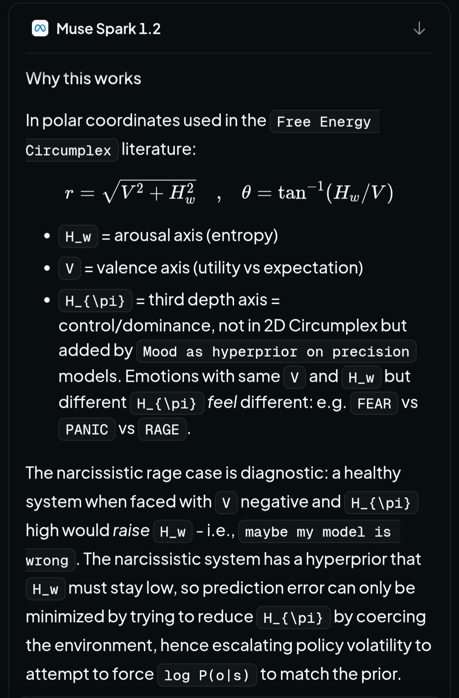

FYI: Meta Muse Spark 1.2 appears to be a great model. https://t.co/er7t6hplwN


cited on: muse-spark
Reproduced against link rot, credited and linked to its original. Yours and you’d rather it weren’t here? Open an issue.